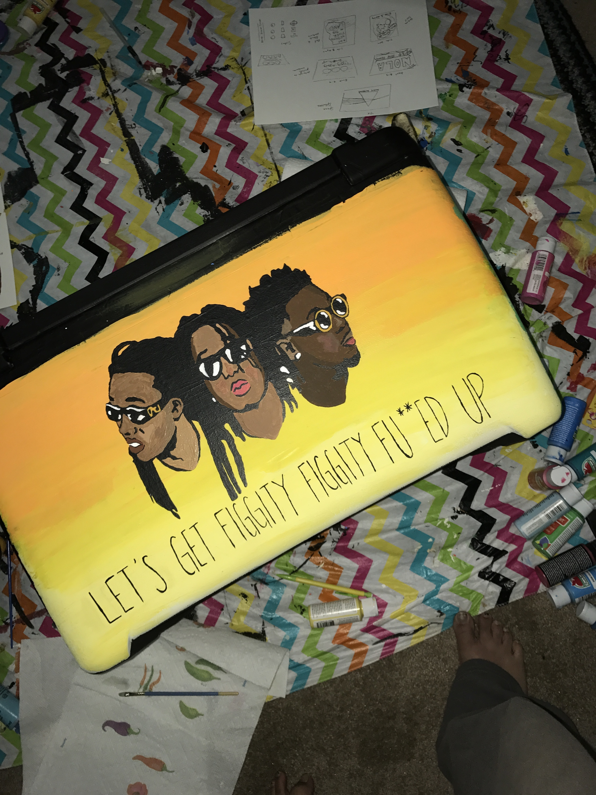
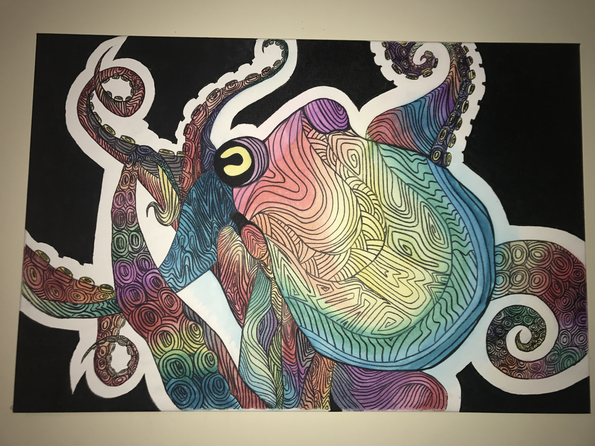
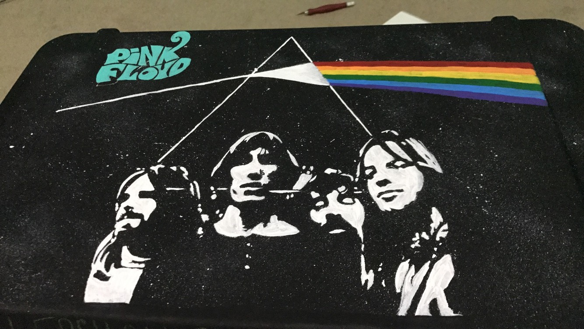
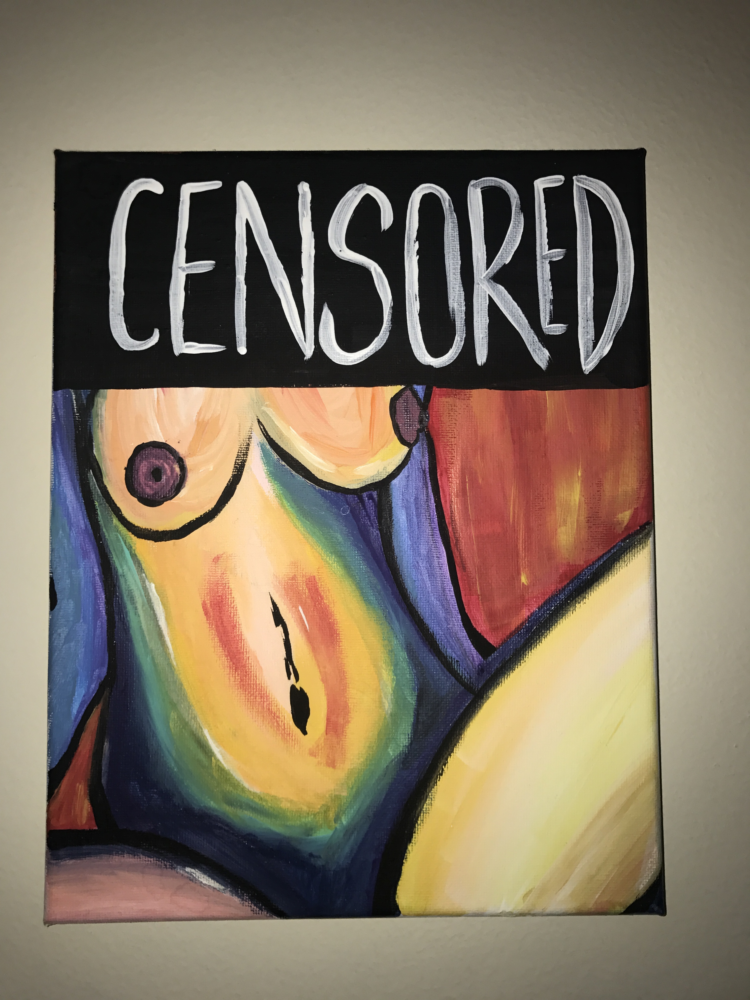
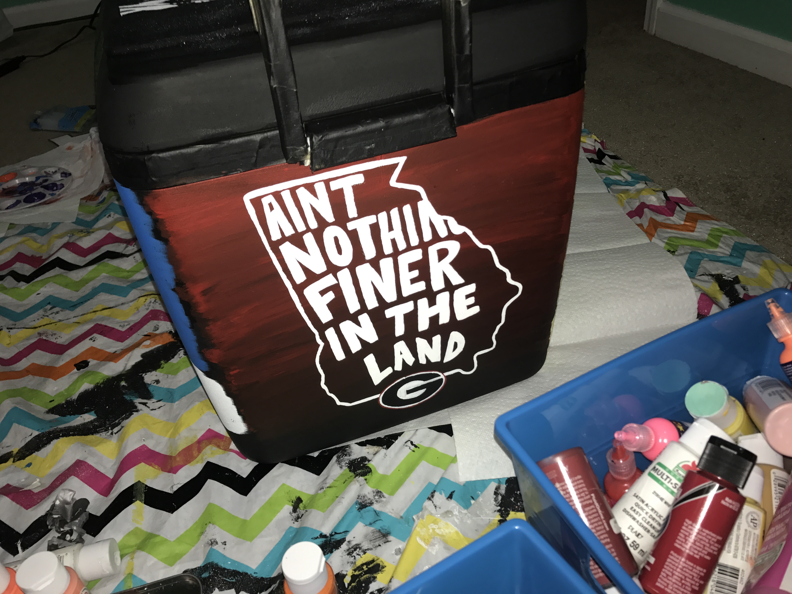
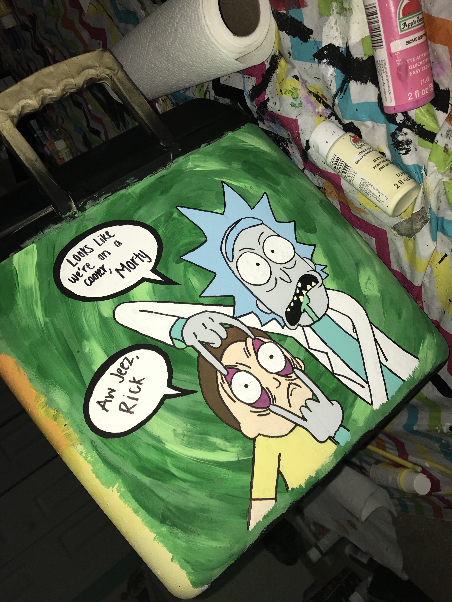

Hi my name is Amy Sahoo and I make art! I grew up in Georgia and used things I enjoy to make my art. Some of my art influences include Tv Shows, Music, Scenery, and other pieces of Art. This page is for me to show everyone my ideas and how I view some of my art.
|  |  |  |
|
I call this piece "Migos".This piece is centered around some of my favorite artists right now. The Migos are actually from Georgia and I painted them on a cooler. I used warm shades to create a sunset theme. Then I painted the three heads. I then added some of their lyrics to the bottom to complete the piece. The medium used for this piece was acrylic paint. I later sprayed it over with some gloss spray. |
This piece is known as "Trippy Octopus". It is just a painting I made for a friend. I got the idea for it after I saw it online and decided I wanted to make my own. I used watercolors and sharpie to make this piece. I was hoping to achieve a psychedelic feel through the use of bright colors. This piece was very fun to make because I don't typically use watercolors. This was done on a canvas. |
The name of this art is "Floyd". I don't listen to Pink Floyd but I made this as the top of a cooler for formal. This piece was made with acrylic paint. I tried making it similar to pop art but I wanted a space feel. I used a toothbrush dipped in paint to spray white dots all over the background, then I made the iconic Pink Floyd cover art behind the singers themselves. |
|  |  |  |
|
The name of this piece is "Censored". I made this piece because I was tired of people shaming women's bodies. I decided it would be satirical to censor the face and not the body. This piece was done on canvas and uses a wide selection of colors to create contrast between warm and cool. This was done with acrylic paint as well. |
I call this piece "GA Dawgs". This is probably one of the least favorite pieces I have made. The only reason I posted it is because the shading goes from black to red in the background which was very hard to do since the black is so pigmented. This was another side of the cooler I made last December. It reminds me of all the good times i've had since being at UGA. |
This art is known as "R&M". I got the idea from a hit Tv show called "Rick and Morty". This was another side of the cooler and I created this with acrylic paint as well. I made the green portal background by mixing different shades of green around. I also made sure to use light brush strokes to create a swivel effect. I like this piece a lot because the text bubble portrays the characters accurately. |
{kind=link}
{kind=link}
{kind=link}
{kind=link}
{kind=link}
{kind=link}